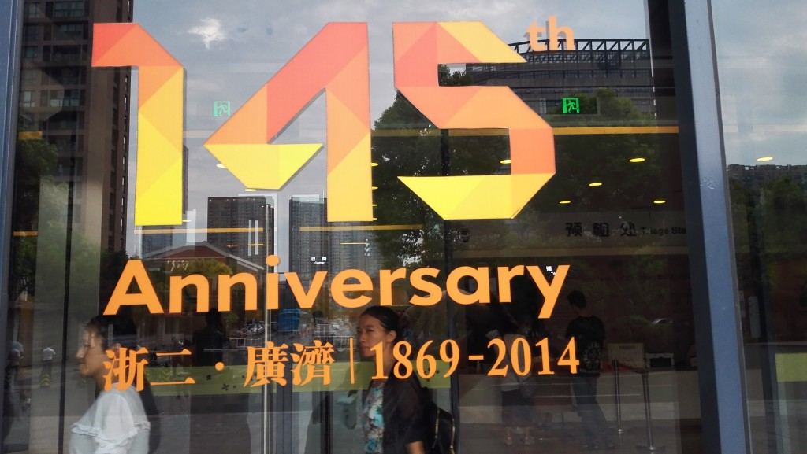
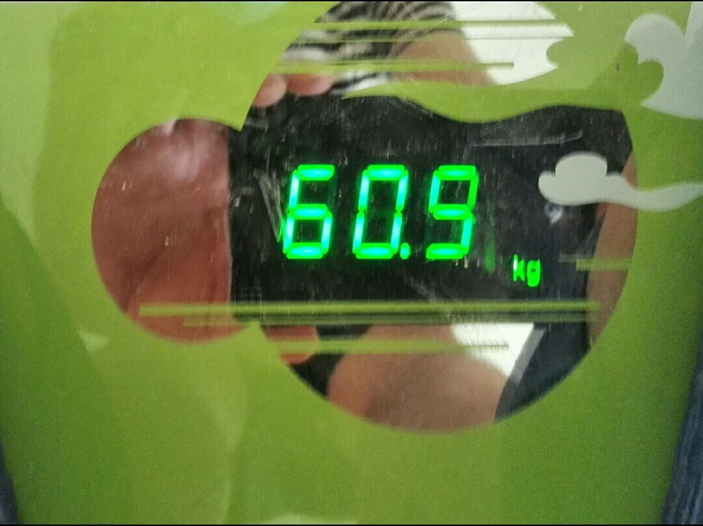
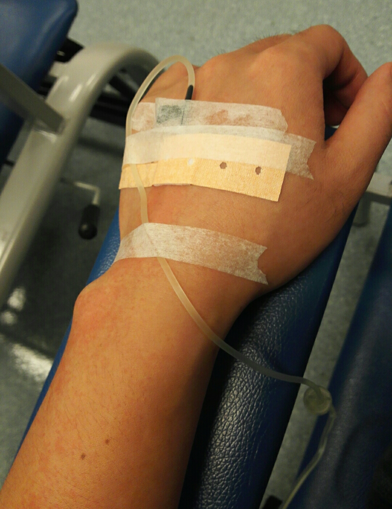

稀松！对不住杭州，对不住G20
注：这是第一篇用手机敲出来的文字，每天下午五点半开始在医院挂那瓶红色肺炎专用药的那四个小时。
熟悉的时间又来到这个最近开始熟悉的地方。这两天杭州g20，今天周末，临出门看了眼电视里习主席G20开幕布上的演讲。

右手上扎的针眼太有点多，今天换左手。腾出右手来闲着想记点东西。
这周过得和平时很不同。和很多生活在这个城市的人感觉一样，路上很空，街道人很少。连输液这边的护士都说这里现在的人都比平日少了好几成。与现实周围形成反差的是朋友圈里很热闹，名种晒图，大江南北。
对不住大家，对不住这个盛世的气氛。这周一个小人物过得异常的。。。稀松！
低烧了几乎整个八月，在月底了没扛住还是来到了这个地方。
有多稀松！
开始一天，单位里，翘班跑医院抽血拍片，幸亏和咱单位在一条街上，打车几分钟就过来了，抽血～回单位～拍片～回单位～取结果。稀松，折腾，狼狈。然后一个多礼拜里每天下班后要来这里挂水至少四个小时。
回家睡觉早早就被隔离在小房间，虽然窃喜过终于逃脱家务了，看到那娘俩忙乱的样子，心里也着急上火还有点惭愧。因为只能戴着口罩面对儿子，他妈问儿子：“是不是都不记得你爹长啥样了？”

当然最明显的稀和松是咱这点小身板。月底十天，减了5公斤。十天减十斤，对此良方有意者可留言咨询。
一只病手在另一只手还在滴滴答答的时候，手机敲这么多字进来，应该不是自己玩悲情，而是想记录下感受，只有在这种地方这种感受才会有稍微饱满那么一点。能想起拍片那下被机器把人送进去的那种紧张，那会儿就想娃和娃他妈。咱这个阶段确实很微妙，已经不是咱一个人的事儿了，倒不是咱自己怕啥。

所以立帖为证（除了欧洲杯那会儿赛前装逼的发个帖子预测下结果很少干这种事）：
等这阵过去后，每天一奶一水果，和娃他妈坚持过半个月。每周最少在楼下的塑胶跑道上跑三次，两次吧先尝尝，这么好的设备在家门口。搞俩二手自行车，骑车上班。每天步行15000+。
临座那个尿结石的小伙正电话给家人汇报自己的健身计划呢。这个时候都是这种心态吧，但大部分人应该是好了伤疤忘了疼。但不影响咱继续表态。
还有，吃饭排队不看手机，关注的每场比赛只看一篇报道，被一群没有足球底蕴只会炒作卖弄粗糙文字的小编骗流量和时间早就证明是一件极其傻逼的事情。回到家里尽量少想工作上的事情，三十多岁的老码农在几天里老纠结看到的那点代码长的难看总想着怎么重写下还是挺装逼的。
算不上死里逃生的大场面的人生感悟，天天坐在这个输液室里三四个小时还是难得大片空闲。记点东西下来总比意思贝斯和唐老师的扯淡有点意思。
顺便记几个三八事：那个过去几天一直值班的男护士 今天没来，他总是非常细心的摸胳膊上吊水打出的红疹问痒不痒，今天的女护士扎针有点疼，应该是新人，边上那个被她扎了好几次才扎上。医院里的G20绿色通道不是摆设，今天碰到了一群执勤的女警察通过G20专用通道把她们一个同伴用轮骑推进来。G20也是保障也真辛苦了一大群人！好长时间都是晴空万里的，偏偏今天G20开幕天有点灰蒙蒙的。朋友圈里有人说是奥黑的那几辆大排量的车闹的，我觉得有道理。
快滴完了，护士要来拔针了，好了好了。。。